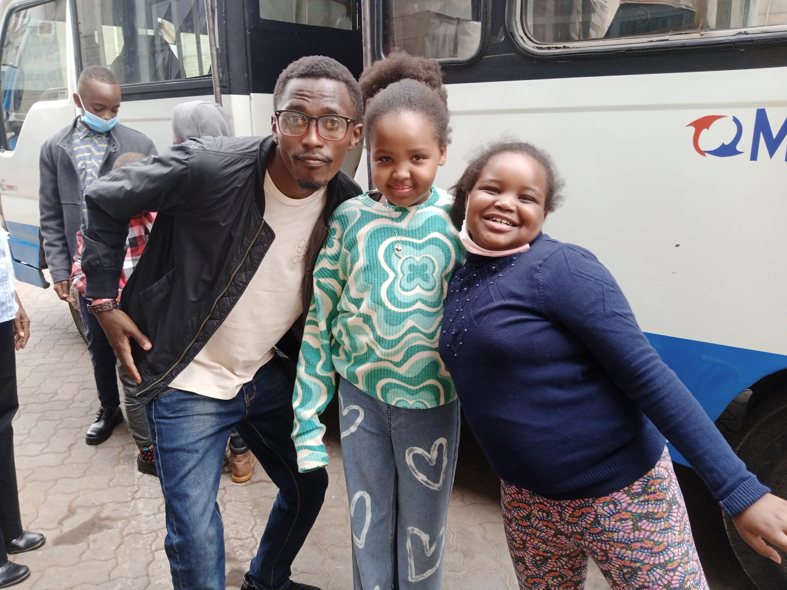
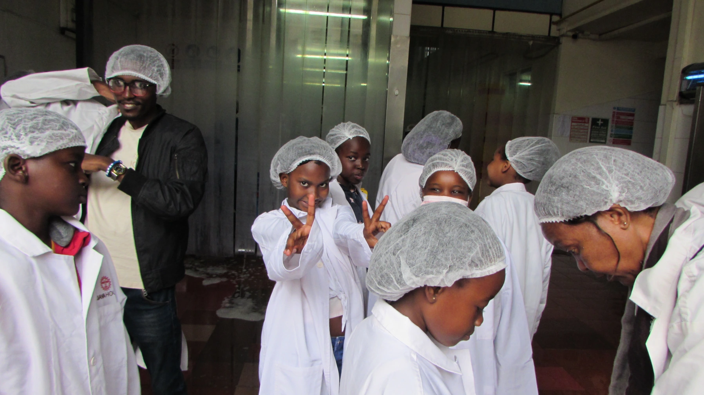
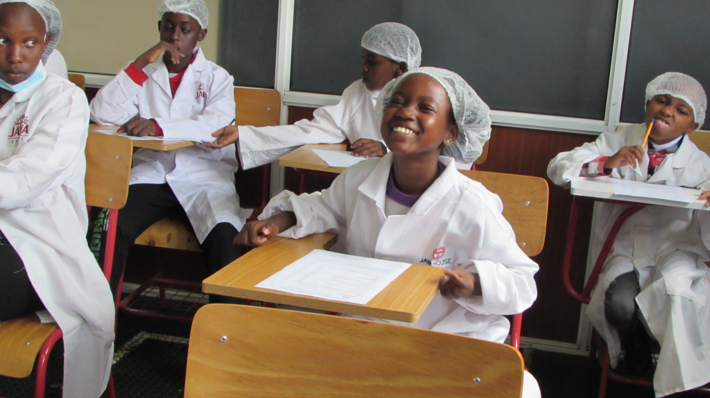
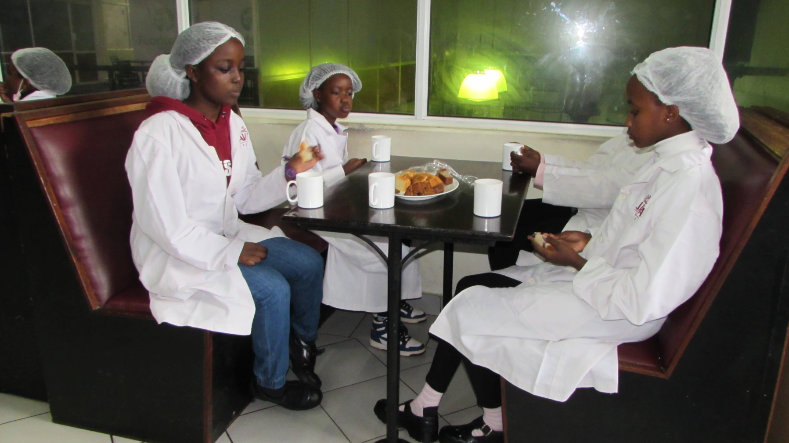
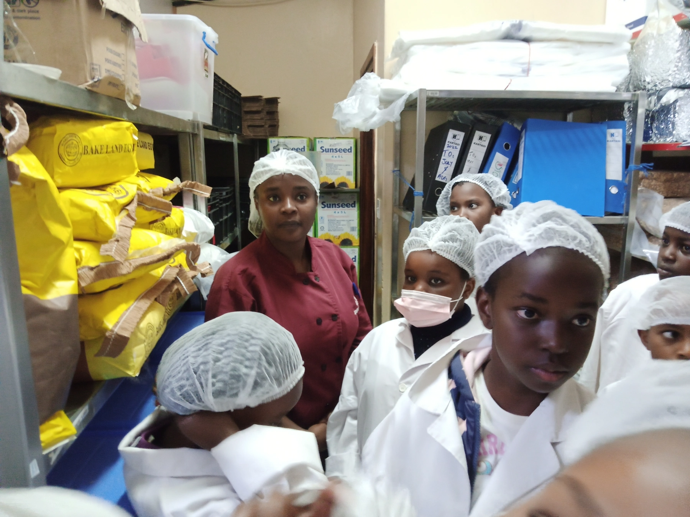
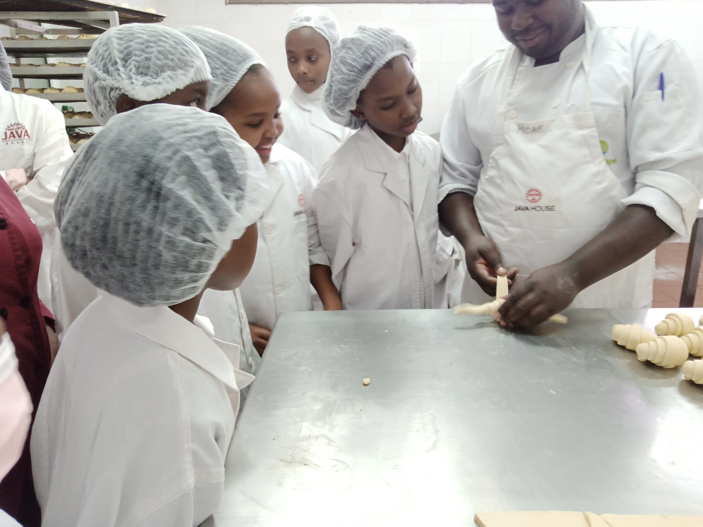
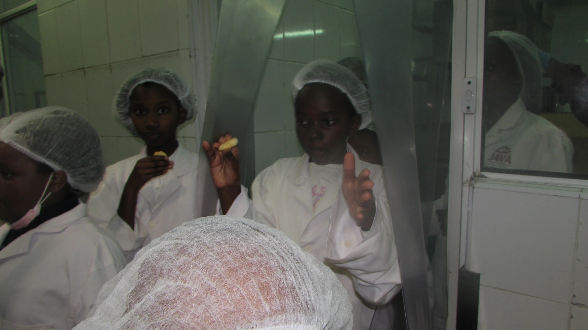
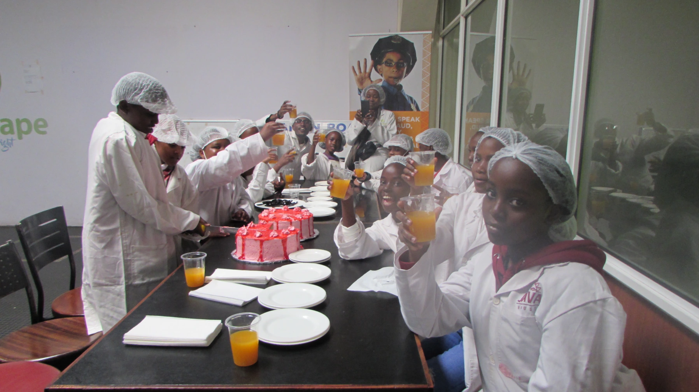

Hey there, come along as we take you through the academic trip we had at the Java factory last Saturday.
On this beautiful day, we were all psyched up for the trip in the morning. We gathered at Parklands and waited for all our friends to arrive so that we could leave together.
As soon as they did, we boarded the bus and headed straight for our adventurous destination. Most of the guys didn't even know that the place we were going, where all the Java food is made, is in industrial area, Nairobi. So we decided to challenge and ask them what they expected to see at the factory.
Some had an idea of what Java was and had been to the restaurant a few times. Some even shared their nice experiences they had when they visited the restaurant for a delicious bite with their families.
We had already paired up before going into the bus. So, guys sat with their partners and bonded with fun stories all the way to the destination. Some shared some morning snacks with everyone while others shared a laughter with their friends and the teachers. It was such a nice moment.
The industrial fumes, the large buildings, people dressed up in same work clothes and the sudden soft screeching of the brakes let us know that we were already here. A step out of the bus and some decided to take a goofy one for the memories.
We walked to the entrance of the factory where we met our welcoming supervisor. Before stepping another foot towards the insides of the factory, the supervisor organized for some white lab-coats and hair nets for us to wear. Just some food health protocols. Plus it kind of made us look like some smart scientists🤓.
The supervisor directed us to a well organized room that looked similar to a classroom where the official introduction from both parties was done. He then gave us some health forms for us to fill before heading towards the cafeteria and the industry itself where the food is actually prepared.
At the cafeteria, two very kind staff members welcomed us with a sweet duo of some tea and muffins. There was bread too. We are not exaggerating this when we say that the muffins were literally out of this world delicious and soft. This guys were truly living up to their hype.
Our tummies were full and ready to produce the energy we needed for the tour around the factory. Our bakery supervisor; a confident lady who you could see enjoyed having us and teaching us about what happens in the Java bakery was finally here. She took us to every bakery sector in order, from the preparation of the dough to the egg-spraying rooms to the oven rooms and packaging rooms where the snacks were ready baked and ready for packaging.
Here's some small snippets of the learning sessions we had during the tour around the bakery.
Some of us even got the chance to prepare some of the products as we learnt directly from the professionals.
We even visited the cookie room (every kid's dream room) and got a taste of the delicious cookies as they were being prepared by the awesome staff.
After the bakery tour, the supervisor finally handed us over to the meat factory supervisor. There we learnt all about how Java prepares their meat. We saw how they thoroughly clean the ingredients before using them for cooking. Java customers,you can rest assured that these guys are very very hygienic in their cleaning process at the industry. We learnt about some of the spices and machinery they use for their meat preparation and so on.
We then moved on to our next supervisor who took us through the most re-known product that Java is well known for, you guessed it, coffee. We learnt about the different types of coffee from different places e.g. Kenya, Uganda. We also learnt about the different roasts of coffee, the machinery used for their preparation and the packaging process of the coffee product.
Coming to the end of the tour, we met up with our first supervisor at the storage factory. All the processed bakery, meat and coffee products are stored here awaiting for trucks to come pick them up and transport them to their respective Java branches and selling outlets. How about that, we got to learn the whole process from the start to the beginning!
By this time, guys were hungry and tired for all the walking around the factory. So, we headed back to the cafeteria where we were served with some juice, snacks and two wonderful strawberry cakes! These guys were really amazing to us. Really really amazing!
Two kids finally stood up to appreciate our hosts for hosting us so perfectly and welcoming us with an open heart like they did. One of the teachers summarized this with an official appreciation as we shortly prayed then departed back to Parklands where our lovely parents awaited us to take us to our respective homes.
It was such a blast hanging out at Java industries. We learnt so much and met amazing people there. Thank you so much Java!
We'll leave you with this clip of one of our own describing her favorite part of the day. Till next week, bye!